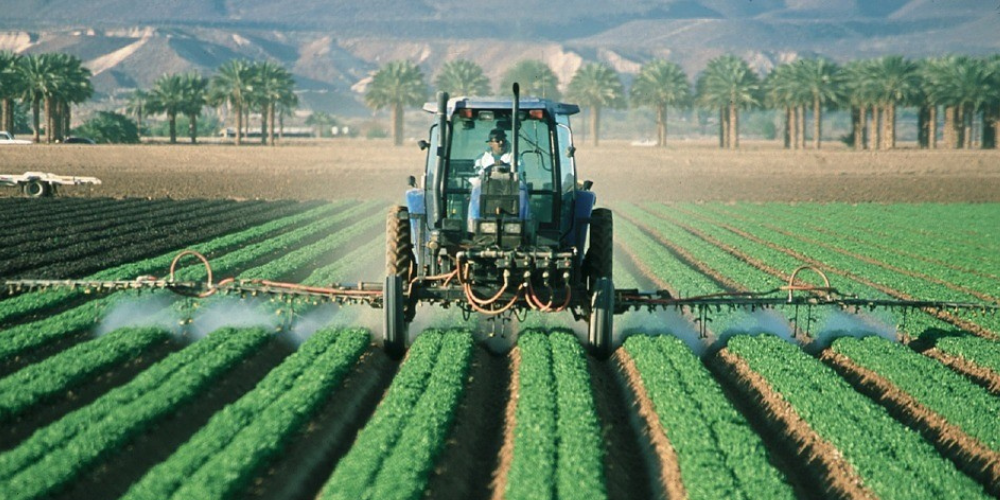
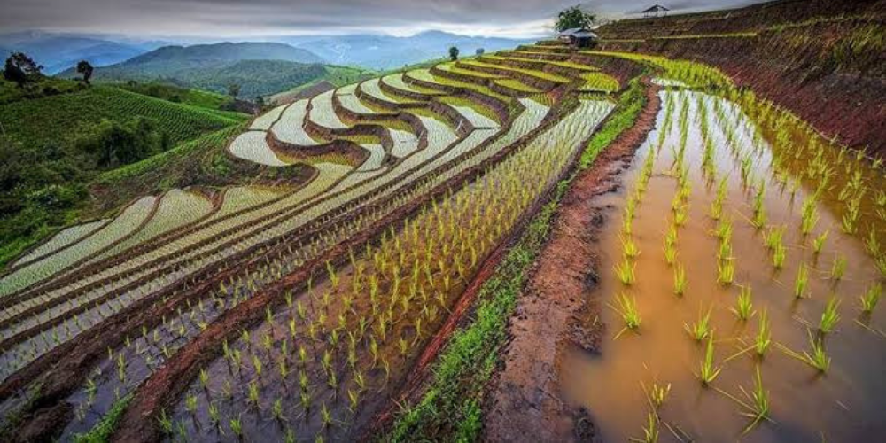
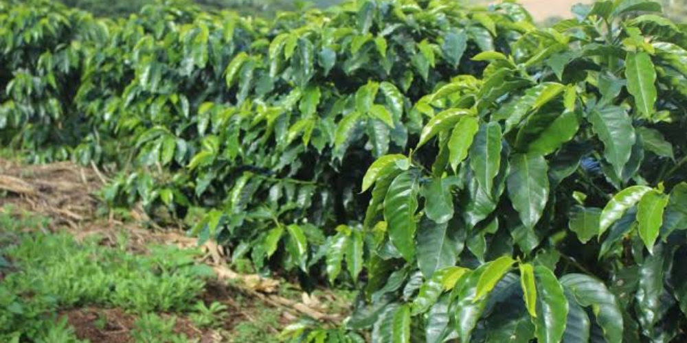
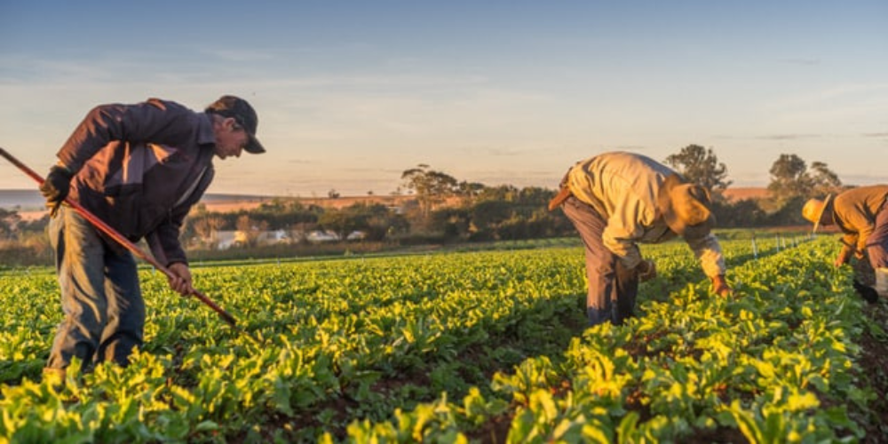
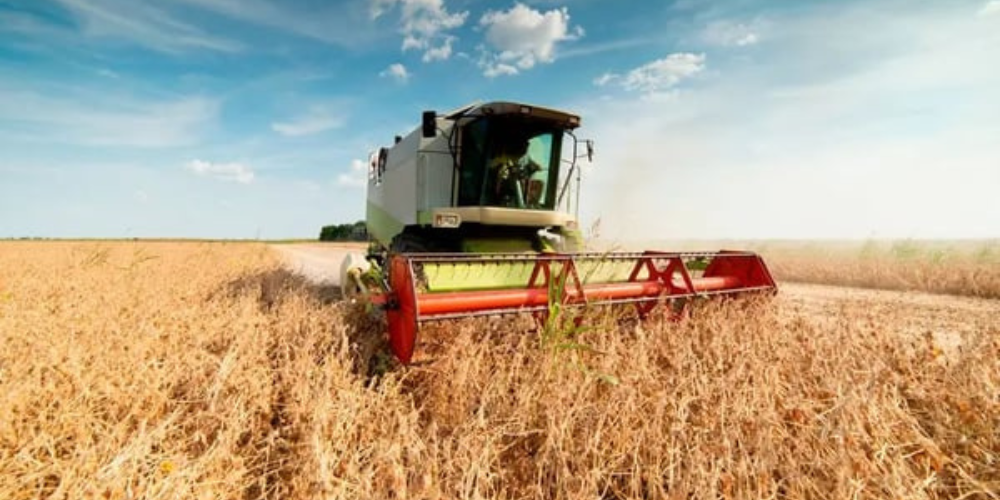

- Redução da emissão de gases de efeito estufa
- Melhoria da qualidade de vida no campo
Quais os benefícios de uma agricultura sustentável?
ㅤㅤA agricultura sustentável se apresenta como uma solução crucial para os desafios do mundo atual, como a escassez de recursos, as mudanças climáticas e a crescente demanda por alimentos.

ㅤㅤMais do que um conjunto de técnicas agrícolas, ela representa um novo paradigma que busca harmonizar a produção de alimentos com a proteção ambiental e o bem-estar social, entre os benefícios estão:
- Solo mais saudável e fértil
- Produção de alimentos mais nutritivos
- Conservação da água e da biodiversidade

Seus benefícios abrangem diversas áreas, impactando positivamente a longo prazo:
1. Meio ambiente:
- Preservação do solo: Evita a erosão, salinização e degradação do solo através de técnicas como rotação de culturas, cobertura morta e adubação verde.
- Conservação da água: Reduz o consumo de água através de irrigação eficiente, manejo adequado do solo e captação de água da chuva.

- Biodiversidade: Protege a biodiversidade local, preservando habitats naturais e polinizadores.
- Redução de emissões: Diminui a emissão de gases de efeito estufa, combatendo as mudanças climáticas.
2. Sociedade:
- Segurança alimentar: Garante a produção de alimentos saudáveis e nutritivos de forma sustentável para as gerações presentes e futuras.
- Saúde do trabalhador: Reduz a exposição a agrotóxicos, promovendo a saúde dos trabalhadores rurais.

- Qualidade de vida: Contribui para o desenvolvimento rural sustentável, com melhores condições de vida para as comunidades.
- Fortalecimento da economia local: Gera renda e oportunidades de trabalho no campo, impulsionando a economia local.
3. Produtividade:
- Aumento da resiliência: Torna a produção mais resiliente a pragas, doenças e eventos climáticos extremos.
- Melhoria da qualidade dos alimentos: Produz alimentos com maior valor nutritivo e sabor.

- Otimização de recursos: Utiliza os recursos naturais de forma eficiente, reduzindo custos de produção.
- Agregação de valor: Possibilita a diferenciação dos produtos no mercado, agregando valor à produção.
4. Outros benefícios:
- Contribui para a conservação de recursos hídricos: Através da adoção de práticas que reduzem o consumo de água e melhoram a qualidade da água.
- Promove a ética ambiental: Incentiva a responsabilidade ambiental e o uso consciente dos recursos naturais.
- Educa e conscientiza: Conscientiza a população sobre a importância da produção sustentável de alimentos.
- Abre novas oportunidades de mercado: Possibilita o acesso a novos mercados e consumidores que valorizam produtos sustentáveis.
Práticas de Agricultura Sustentável
Diversas práticas podem ser adotadas...
- Agricultura agroecológica
- Rotação de culturas
- Adubação verde
- Controle biológico de pragas e doenças
- Agricultura familiar